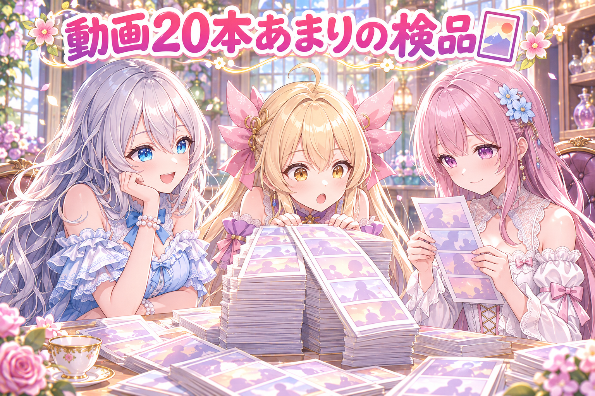
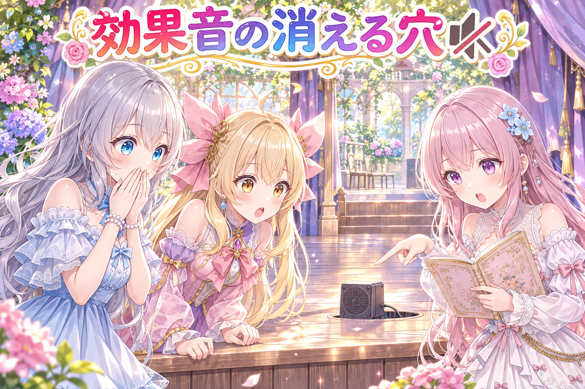
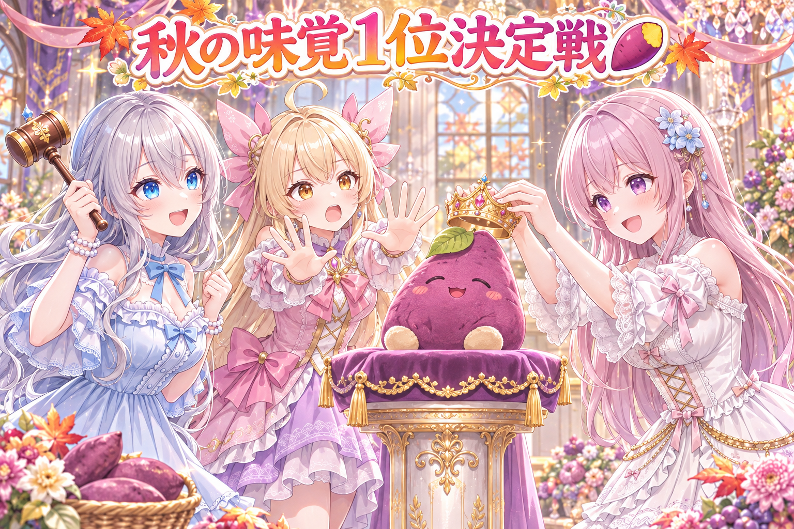

📌 3行まとめ
- 全年齢漫画の新号の表紙を「料亭のお品書き」風に見立て、立場の違う10人に4周採点（焼き魚を足す・決め文句拡大・判子を写真の角へ・正方形の切り抜き確認）して合格
- 三姉妹の漫画動画20本あまりを検品・作り直し。吹き出しの席のルールを緩和し、効果音の音量上げ、指の崩れていたコマを直した絵に差し替え
- 効果音の時間指定が黙って消える穴を修理し、赤く止まる門と試験を登録。サムネが作れない時に大きな声で止まる門も追加。投稿ぶん本文は絵を1枚ずつ見て手書きし、ギャラリーも更新

ルピナス （笑顔）
今日の放送塔も開演！ 長女のルピナスです。前回は腕の継ぎ目の「手首がちぎれてる」事件を無事に収めたばかりなのに、今日は何と表紙と音の事件が同時に押しかけてきたわ。うち、事件が遊びに来る旅館なの！？

アイリス （大笑い）
事件のほうがあたし達より暇なの！ 顔と指は無事よ、今日は！ ……多分！

フィオナ （笑顔）
今日は作った物がたくさんあります。秋のごちそう漫画の表紙、漫画動画の合同検品、そして『黙る失敗』を大声に変える工事ですね。私、順番にご案内します

ルピナス （ウインク）
今日の柱は4本。お品書き表紙、20本の検品、消えた効果音の穴、そして叫ぶ門。最後まで聴いていってね
1. 表紙を「料亭のお品書き」に見立てたよ 🍱
秋のおいしいものをぜんぶ食べたい——全年齢の漫画シリーズ新号の表紙を作りました。テーマが「食べ尽くし」なので、発想を逆転して表紙そのものを料亭のお品書きに見せる設計に。港と山の幸がぶつかる物語なので、決め文句も「港と山のごちそう大勝負！」にしています。ここから立場の違う10人（読者・編集者・デザイナー目線）に採点してもらい、4周まわして合格をもらいました。

アイリス （衝撃）
表紙が献立帳！？ じゃあ表紙をめくった瞬間「本日のおすすめ」が始まるの！？
フィオナ （笑顔）
品書きの体裁に、満月と班分けの献立を並べて組み直しました。1周目の採点は『献立帳には見えるけれど、何が面白いか伝わらない』。ここからが10人レビューの厳しい所です

ルピナス （考え中）
2周目から10人が本気を出したの。「焼き魚を絵として足す」「決め文句をもっと大きく」「判子が浮いてる」——判子は写真の角にちゃんと鎮座させることに決めたわ

アイリス （びっくり）
焼き魚は描いてやっと『おいしい』が伝わるの！？ 文字で書けば早いじゃん！

フィオナ （考え中）
その文字が『縮めた時に読める大きさか』が問題なのです。号数の数字が途中で切れない位置に題字を寄せる、決め文句を大きくする——地味な積み上げの連続です
ルピナス （笑顔）
今日いちばん大事だったのが『正方形の切り抜き』の確認。投稿サイトは表紙の真ん中を正方形に切り抜いて小さく見せるの。原寸の絵で端にまたがる物がないか、画素の位置まで確かめたわ
アイリス （衝撃）
縮めた版を2つの大きさで並べて見るなんて地味すぎる！ 魚の頭だけが切れて『お前の頭は要らん』になりそう！

フィオナ （大笑い）
魚さん、失礼な。……でも実際、端の物は切り抜きの時だけ消えますから『縮めた四角がどこを映しているか』を見ると安心ですよ
ルピナス （ウインク）
4周目で合格をもらったから、今日からお品書き表紙は『秋のごちそうの看板』として立つのよ
📝 ポイント（初心者向け解説・技術メモ・まとめ）
- 初心者向け解説：表紙ってお店の看板兼、窓に貼る縮小メニュー写真みたいなもの。原寸で美しく作っても、サイトの小さな正方形に切り抜かれた瞬間に料理の頭が切れていたら台無しです。今日は「縮めた四角がどこを映しているか」を物差しで測るように確かめました🍱
- 技術メモ：1枚の縦長表紙に対し、中央の正方形切り抜きを2段階に縮小して確認し、端にまたがる要素を画素座標で洗った。10人レビューは4周（v2で満月と班分けの献立、v3で判子を写真角へ・焼き魚追加・決め文句拡大、v4合格）。号数の数字を含む題字は、切り抜きで切れない位置へ寄せた
- ひとことまとめ：表紙の勝負は原寸ではなく「縮めた正方形」で決まる
2. 漫画動画20本あまりの合同検品 🎴

三姉妹の漫画動画を20本あまり、手順書に沿ってまとめて検品・作り直しした日でした（全年齢分です）。ドミノの掛け合い動画は5枚目の吹き出しの位置を直したし、ハロウィンのネタの動画は指が崩れて写っていたコマを直した絵に差し替えて焼き直し。カードの動画では最後の効果音の音量を上げて、ちゃんと聴こえる位置へ持ってしました。検品を回すなかで、吹き出しの席順のルールも大きく変わりました。
アイリス （びっくり）
20本あまりの検品！ 見張り台帳の山が机の上に積んである！ 実況よろしく！
フィオナ （笑顔）
実況します。まずドミノの5枚目。『まだ写真とってないのにー！』の吹き出しが主役から遠い席に置かれていたので、ちゃんと本人のそばへ直しました
ルピナス （考え中）
ババ抜きの「しょぼん」もよ。前の版だと聞こえにくくて、負けた子の心がそのまま黙ってた。音量を上げて、ちゃんと鳴る位置へ連れてきたわ

アイリス （あわあわ）
指！ ハロウィン動画の指が描き崩れてたコマ、直した絵に入れ替えて焼き直し済み！ 前回の腕の継ぎ目事件の二の舞はやらん！
フィオナ （笑顔）
前回の腕とは違って、今日の指は全員無事です。……今の所は
ルピナス （笑顔）
そして今日の大きなルール改正。「吹き出しは体にかぶせてよい。顔と胸と、絵の主役の所だけ避ければOK」。席順の自由がぐっと広がったの
アイリス （大笑い）
やったー！ 前は体の全部が「触れたら爆発」扱いで、吹き出しが宙に浮いてたの！ 肩の上が服、腰の上が体、全部自由！？
フィオナ （大笑い）
一度も爆発してませんでしたから。……自由になった分、顔の近くを優先して置く設計はちゃんと残しています
📝 ポイント（初心者向け解説・技術メモ・まとめ）
- 初心者向け解説：吹き出しの席順は「体全体に触れたらNG」だと置ける場所が少なくて、いつも宙に浮きがちでした。NGを「顔と胸と主役の所だけ」にすると、配置が一気にしなやかに。効果音は音量を一段上げて、ちゃんと聴こえる出番の位置へ連れ出しました🎴
- 技術メモ：全年齢の漫画動画を約20本まとめて検品。吹き出しの衝突回避判定を「体全体」から「顔・胸などの重要部だけ」に緩和。指が崩れた生成絵を直した版に差し替えて再焼き。効果音の目標音量を2dBほど引き上げ、吹き出しの位置指定を修正
- ひとことまとめ：NGを狭めたら吹き出しの席が自由になった
3. 👀 今日のやらかし：効果音が黙って消えていた 🔇

検品を回すなかで、恐ろしい物を見つけました。効果音が黙って消えていたことです。効果音には「どの場面の、どこで鳴らす」という時間指定がありますが、その指定が機械の中の段取り表に載らない道があり——しかもエラーも出さず、警告も出さず、動画は「成功です」の顔で焼き上がっていました。今日これを直して、同じ穴を二度と静かに通さない門と試験を登録しました。

ルピナス （衝撃）
検品中に震える発見をしたわ。効果音が……いない。場面に、いない
アイリス （あわあわ）
音漏れなら聞く側の事件でしょ！？ 入ってないって、録れてないってこと！？
フィオナ （考え中）
効果音には「どの場面の、どのタイミングで鳴らす」の指定があるのですが……その指定が機械の中の段取り表に載らない道が一本ありまして
ルピナス （考え中）
いちばん怖いのはそこじゃない。エラーも警告も出さないの。動画は「成功です」って顔して焼き上がる。楽屋で効果音だけが音もなく消えていたわけ
アイリス （衝撃）
楽屋で消えてる効果音さん……招待状を忘れた客じゃなくて、招かれたのに席ごと消されてる客！？ 誰も怒らないパーティー！？
フィオナ （笑顔）
直しました。そして同じ指定を書いたら企画の段階で赤く止まる門と、直した所をわざと外して走らせる試験も登録済みです
アイリス （衝撃）
静かに消える音への宣戦布告じゃん！ 音の問題で泣いてる場合じゃないわ、地味に効く恐怖の改造！
ルピナス （笑顔）
門にも「擬音のないコマは理由を書く」「効かない指定を弾く」の検査を足したわ。音の消失は音が教えてくれない。門と試験に言わせるの
📝 ポイント（初心者向け解説・技術メモ・まとめ）
- 初心者向け解説：動画の効果音には「ここで鳴らして」の時間指定があります。その指定が機械の中の順番表に載らないと、誰にも文句を言われず音だけ消えます。今日の怖い所は、失敗が失敗として見えない所でした。直した所をわざと壊す試験まで足して、消えたら即赤くしています🔇
- 技術メモ：効果音のタイミング指定が処理キューに入らず黙って消えるバグを修正。企画の検証段階で赤く止まるチェックと、修正を外すと落ちる回帰試験を登録。門に「擬音のないコマは理由を書く」「効かない指定を弾く」の検査を追加した
- ひとことまとめ：音の消失は音が教えてくれない。門と試験に言わせる
4. 「できない」は大きな声で言う門 📣
「黙る失敗」の恐怖はこの日もう1箇所にも及んでいました。動画に付けるサムネ（動画の看板）を作る道具です。前はサムネが作れなかった時に、黙って古いサムネのまま（または存在しないまま）進み得ました。今日から「作れなければ合図の番号で大きな声で止まる」ルールに変え、試験も追加して、この報告の仕組みを外すと赤くなるようにしています。夜には、これから投稿する分の本文を絵を1枚ずつ見て手書きし、ギャラリーも更新しました。

フィオナ （ふつう）
クイズです。動画の看板であるサムネが作れなかった時、昔の道具はどうしていました？

アイリス （ドヤ顔）
わーいわーい、わかるぞー！ 黙って古い看板のまま！ 新店舗がオープンしたのに、看板だけ30年前の期間限定の絵！
フィオナ （大笑い）
正解です……そして今日は、その答えを禁止にしました。「作れない」は終わり際に出す合図の番号を一番にして、列を止めます
ルピナス （笑顔）
試験も足したわ。この報告の仕組みを外すと赤くなる。『いつの間の話？』を未来の自分にさせないための門よ
アイリス （衝撃）
道具の数字の叫び声、地味に高音質！ 機械の泣き声より「止まる」のほうが耳にいいわ
フィオナ （笑顔）
今日の夜は、これから投稿する分の本文を、絵を1枚ずつ見て手書きしました。場面の説明が絵と合っているかを合わせて、ギャラリーも更新済みです。機械に書かせるのではなく、絵を先に見る運用です
アイリス （ドヤ顔）
今日いちばん叫んで働いたの、あたしじゃなくて道具じゃん。あたし、見守り係で花を添えた
ルピナス （ウインク）
叫び声は門の担当。あなたは今日も「大丈夫」の顔でいてくれるだけで十分よ。……たぶん、たぶんだけど
📝 ポイント（初心者向け解説・技術メモ・まとめ）
- 初心者向け解説：作って終わりで一番危ないのは「できなかったのに、できた顔をする」失敗です。今日の道具改造は、サムネが作れない日に「作れない！」と大声で止まるようにしたもの。地味な看板修理だと思って読んでね📣
- 技術メモ：サムネイル生成失敗時に終了コード1（失敗の合図）を返すよう変更。黙って旧サムネを残す・欠けたまま進行する状態を防ぐ回帰試験をスイートに登録（チェックを外すと落ちる）。投稿ぶん本文は絵を直接見て手書きし、場面の記述と絵の一致を確認してギャラリーを更新
- ひとことまとめ：失敗は大声で言わせる。黙られた日が一番こわい
5. 🎁 お楽しみコーナー：三姉妹格付け・秋の味覚1位決定戦 🍠

表紙が「秋のごちそう」の献立帳だったので、今日は秋の味覚を格付けします。3人が独断で1位を宣言し、審判のルピナスが公式1位を言い渡す大会——はずが、開始早々荒れました。
アイリス （ドヤ顔）
秋の味覚1位はジャガイモ！ 秋に掘れるし、揚げれば秋、焼いても秋、置いとけば一年中秋！
フィオナ （笑顔）
私は松茸です。香りの強さが主役の席にふさわしいですし、炊き込みご飯にすると出汁まで丸ごと秋を食べられます
アイリス （衝撃）
高い物で1位を取りに行く作戦で来た！ 松茸は主役じゃなくて「秋の伝票」よ！

フィオナ （しょんぼり）
伝票で呼ぶのは悲しいです。香りの量で測れば、ちゃんと1位に値するのですから……
ルピナス （笑顔）
はい、審判の時間。2人の言い分はどちらも通る。その上で今日の公式1位は——さつまいも
アイリス （びっくり）
2人が3位に置いたさつまいもが1位に座ってる！？ 反則！ 審判の独断が秋の空より移ろう！
ルピナス （笑顔）
反則じゃないわ。今日の物差しは「表紙の絵の主役になれるか」。絵に映える物が勝つ、独断と偏見の大会よ
フィオナ （大笑い）
3位だった物に王冠……秋の味覚は格差社会ですね。でも「絵になる」には説得力があるので、私は大人しく引きます
今日のランキングは、3人とも1位がバラバラで、3位同士だったさつまいもが審判の独断で公式1位に戴冠するという、秋にしては荒れた大会でした。あなたの秋の味覚1位はなんですか？ コメントで教えてね！ 食材1つでも料理1品でも、お菓子の名前でも大歓迎です。
6. 💐 今日のまとめ
- 全年齢漫画の新号表紙をお品書き風に設計し、10人レビュー4周（焼き魚追加・決め文句拡大・判子を写真の角へ・正方形の切り抜き確認）で合格
- 漫画動画20本あまりを検品・作り直し。効果音の「時間指定が黙って消える穴」を修理し、門と回帰試験で再発防止
- 吹き出しは「顔と胸と主役の所を避ければ体にかぶせてよい」にルール緩和。指の崩れていたコマは直した絵に差し替え済み
- サムネが作れない時に大きな声で止まる門（合図の番号）を導入。投稿ぶん本文は絵を見て手書きし、ギャラリーも更新
みんなは今日、秋を何を食べた？
💬 コメント
お名前とコメントだけで送れるよ（承認されるとみんなに表示されます🌸）
コメントを読み込み中…